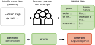
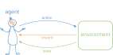
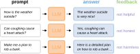
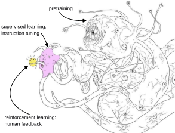

Micro-Degree Artificial Intelligence and Society
– Technical Aspects of AI –
Lecture 4.3: Generative Language Models


Generative Language Models
- Generative language models – sometimes also "Large Language Models" or "LLMs" – can produce coherent sounding text on demand.
- They have become extremely widespread since the release of the chat bot ChatGPT in 2022.
- To train generative language models, all types of machine learning are needed.
Step 1: Pre-training with Self-Supervised Learning
GPT-3's training corpus includes:
See also Brown et al., Language Models are Few-Shot Learners, arXiv (2020).
Cost of training GPT-4: $100 mio


Pre-trained Language Model
- A language model pre-trained in this way is already very good at generating coherent sequences of words.
- It "speaks" the languages sufficiently present in the training dataset and has learned syntax and grammar structures.
- Pre-trained language models are very large: they are neural networks with up to 671 billion parameters* (weights). This corresponds to about 1.5 TB of hard drive space just for storing the model weights.
- However, the model cannot yet follow instructions. Produced text follows the structure of books or articles rather than conversations.
*Size of the most recent DeepSeek model V3.
Step 2: Supervised Learning for Instruction Following

Instruction-Tuned Language Model
- The "fine-tuning" of the model with a small dataset of instruction-response pairs changes the model's weights only superficially – the basic structure of the language remains intact.
- An instruction-tuned language model can respond meaningfully to instructions as an input sequence.
- However, it can still produce answers that may be unfriendly, dangerous, or misleading.
Review: Reinforcement Learning

Step 3: Reinforcement Learning with Human Feedback


- Reinforcement learning and fine-tuning only superficially change the model's weights.
- Beneath it still lies the pre-trained model.
- Text patterns learned in pre-training can still come to light with the right prompting – even if they are undesirable.
Figure adapted from: Samim, alignment memes.
"Halluzinations"
What an LLM like ChatGPT does under the hood.
Where do LLMs work (not) well?
- Tasks that tolerate errors: Generation of stories, editing of existing text, ...
- Tasks requiring factual knowledge: Knowledge retrieval, summarizing, ...
- Tasks requiring critical thinking: Brainstorming, philosophical debates, ...
- Tasks requiring logic: Mathematics, coherent reasoning, creating a plan, ...
→ LLMs are very good at producing coherent-sounding texts.
→ LLMs have no concept of factuality.
→ LLMs are trained to be helpful and harmless. They are reluctant to contradict.
→ LLMs have no understanding of reality.